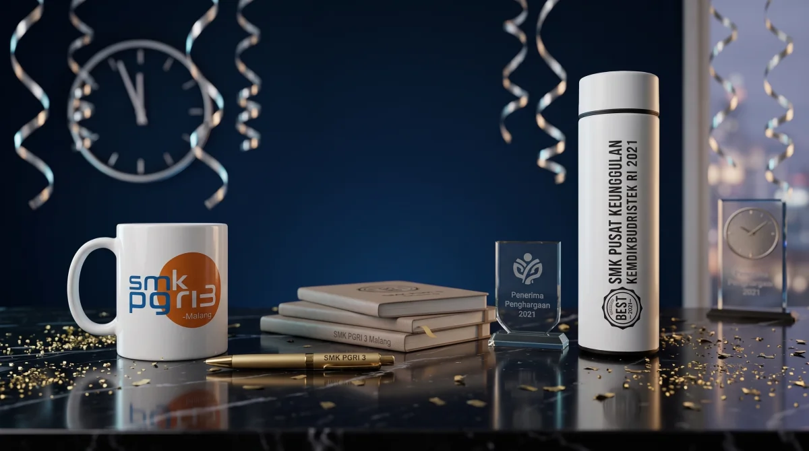

Ringkasan Jawaban Cepat (Direct Answer)
Merchandise perusahaan custom paling efektif ketika produk dipilih berdasarkan tujuan kampanye dan kebutuhan penerima, bukan hanya karena dapat diberi logo. Untuk expo, produk yang mudah dibawa dan mendukung interaksi booth biasanya lebih relevan. Untuk brand awareness jangka panjang, pilih barang yang berguna dan berpeluang dipakai berulang, seperti tumbler, tote bag, notebook, atau apparel yang sesuai target audiens.
| Tujuan Kampanye | Produk yang Dapat Dipertimbangkan | Fokus Branding & Personalisasi |
|---|---|---|
| Brand Awareness | Tote bag kanvas, tumbler stainless, apparel (polo shirt/jaket), notebook hardcover | Desain visual yang elegan, subtle branding, nyaman dipakai di ruang publik |
| Expo & Booth Pameran | Tote bag spunbond/blacu, lanyard, pouch serbaguna, pulpen promosi, QR card | Logo kontras, dynamic QR code ke katalog digital, slogan singkat |
| Lead Generation | Notebook agenda kulit, tumbler termos SUS304, gift set, powerbank custom | Nilai persepsi tinggi sebagai apresiasi bagi prospek prioritas (qualified leads) |
| Product Launch | Desk set tematik, flashdisk kartu, tumbler custom grafir, packaging kardus custom | Identitas visual produk baru, storytelling peluncuran, tagline kampanye |
| Employer Branding | Apparel kantor, tumbler vacuum, buku agenda, welcome kit karyawan baru | Nilai budaya kerja, nama personal karyawan, rasa bangga terhadap institusi |
- Berorientasi Tujuan: Jangan memulai pengadaan dari pertanyaan "barang apa yang murah?", melainkan "apa tujuan kampanye dan perilaku audiens yang ingin dibangun?".
- Filosofi Anti-Waste: Produk dengan nilai guna nyata (utility) dan material awet akan disimpan dan digunakan berbulan-bulan, menghasilkan paparan merek (brand exposure) berulang kali lipat lebih tinggi.
- Teknik Branding Proporsional: Sesuaikan metode cetak dengan substrat material (laser engraving untuk logam, UV print untuk permukaan keras, DTF/sablon untuk tekstil, deboss untuk kulit sintetis).
- Distribusi Bertingkat (Two-Tier): Pada pameran bisnis (expo), pisahkan merchandise massal berbiaya ekonomis untuk pengunjung umum dari merchandise premium untuk prospek yang terverifikasi.
- Pengukuran Terintegrasi: Manfaatkan dynamic QR code dan tautan UTM pada merchandise fisik agar konversi pengunjung booth dan aktivasi kampanye dapat diukur secara terdata.
- 1. Apa Itu Merchandise Perusahaan Custom?
- 2. Tentukan Tujuan Sebelum Memilih Merchandise
- 3. Rekomendasi Merchandise Berdasarkan Target Audiens
- 4. Memilih Merchandise yang Berpeluang Dipakai Ulang
- 5. Teknik Cetak Logo dan Branding Merchandise
- 6. Cara Menyusun Budget dan Menghitung Harga Grosir
- 7. Cara Mengukur Efektivitas Merchandise Promosi
- 8. Kategori Produk Merchandise yang Tersedia di Seminarkits.id
- 9. Alur Pemesanan dan Standar Kontrol Kualitas (SOP)
- 10. 7 Panduan Lengkap Seri Merchandise Perusahaan
- 11. Pertanyaan yang Sering Diajukan (FAQ)
Rencanakan Merchandise Perusahaan Custom untuk Kampanye Anda
Butuh merchandise untuk expo, product launch, kampanye promosi, atau branding internal? Kirim tujuan campaign, target audiens, jumlah unit, tanggal event, budget, dan file logo Anda kepada kami.
1. Apa Itu Merchandise Perusahaan Custom?
Dalam dunia komunikasi pemasaran dan manajemen hubungan korporat, merchandise perusahaan custom adalah produk fisik fungsional yang dipersonalisasi secara khusus menggunakan identitas visual suatu merek (brand identity), tema acara, maupun pesan kampanye tertentu. Produk ini berfungsi sebagai duta fisik (physical brand ambassador) yang menghubungkan sebuah entitas bisnis dengan para pemangku kepentingannya secara nyata di dunia nyata.
Kustomisasi pada merchandise modern tidak lagi sebatas menempelkan logo secara mekanis di tengah produk. Kustomisasi menyeluruh mencakup penyesuaian palet warna korporat yang presisi (sesuai panduan Pantone brand guideline), penempatan tagline kampanye, integrasi dynamic QR code yang terhubung ke landing page digital, hingga sentuhan personal berupa grafir nama individu dan desain packaging eksklusif.
Namun, tim pemasaran dan procurement sering kali menyamakan istilah merchandise promosi dengan jenis pengadaan B2B lainnya. Untuk menentukan strategi yang tepat dan mencegah pemborosan anggaran, perhatikan batasan perbedaan mendasar berikut:
| Kategori Pengadaan | Tujuan Utama | Target Penerima | Karakteristik Produk |
|---|---|---|---|
| Merchandise Perusahaan | Brand awareness, lead generation, aktivasi promosi, promosi expo | Prospek bisnis, pengunjung pameran, pelanggan, komunitas | Fungsional, berorientasi penggunaan sehari-hari, kuantitas menengah hingga besar |
| Corporate Gift | Apresiasi relasi bisnis strategis, retensi mitra VIP, networking eksekutif | Klien prioritas, direksi mitra kerja, pemangku kebijakan, stakeholder utama | Nilai persepsi tinggi, kemasan hardbox mewah, kuantitas terbatas dan personal |
| Souvenir Kantor | Apresiasi masa bakti, kenang-kenangan internal, perpisahan, gathering | Karyawan internal perusahaan, pensiunan, keluarga besar institusi | Fokus emosional, kebersamaan korporat, grafir nama personal karyawan |
| Paket Seminar Kit | Perlengkapan esensial penunjang kegiatan ilmiah, diklat, atau workshop | Peserta konferensi, peserta bimtek, delegasi simposium | Paket terpadu (tas, blocknote, pulpen, nametag lanyard) yang siap pakai saat acara |
Bila kebutuhan organisasi Anda saat ini lebih menitikberatkan pada apresiasi internal masa kerja atau cenderamata rapat kerja, Anda dapat meninjau panduan mendalam kami tentang souvenir kantor custom untuk karyawan dan acara perusahaan. Namun, jika sasaran utama Anda adalah memperluas jangkauan pasar eksternal dan menjaring prospek baru, maka strategi merchandise perusahaan berikut adalah panduan yang harus Anda terapkan.
2. Tentukan Tujuan Strategis Sebelum Memilih Merchandise
Salah satu kesalahan paling fatal dalam pengadaan merchandise promosi adalah memilih jenis barang semata-mata karena produk tersebut sedang populer atau memiliki harga beli yang murah, tanpa mempertimbangkan tujuan objektif kampanye. Setiap instrumen promosi memiliki dinamika perilaku konsumen yang berbeda. Di Seminarkits.id, kami mengelompokkan lima tujuan strategis utama pengadaan merchandise:

A. Merchandise untuk Brand Awareness Jangka Panjang
Tujuan dari kampanye brand awareness adalah menanamkan ingatan merek (top-of-mind awareness) dan memaksimalkan frekuensi paparan visual (impressions). Produk yang dipilih harus memiliki karakteristik:
- Frekuensi Penggunaan Tinggi: Produk yang digunakan setiap hari, seperti botol minum stainless steel (tumbler), mug meja kerja, payung lipat, atau tas jinjing (tote bag).
- Visibilitas di Ruang Publik: Barang yang dibawa bepergian ke kantor, transportasi umum, atau kafe, sehingga logo Anda dilihat tidak hanya oleh pemiliknya, tetapi juga oleh ratusan orang di sekitarnya.
- Pendekatan Desain Subtil (Subtle Branding): Hindari logo berukuran raksasa yang tampak seperti papan iklan berjalan. Desain minimalis yang artistik justru membuat penerima bangga menggunakannya secara terbuka.
Merchandise Promosi Terlaris untuk Brand Awareness: Cara Memilih Produk yang Tepat
B. Merchandise untuk Pameran dan Expo Bisnis
Ajang pameran dagang dan expo industri memiliki lingkungan yang sangat kompetitif. Ratusan stan berlomba-lomba menarik perhatian ribuan pengunjung yang berlalu-lalang dengan cepat di lorong hall pameran. Merchandise expo harus memenuhi dua fungsi: sebagai magnet penarik langkah kaki ke booth (booth traffic stopper) dan sebagai alat bantu pengunjung membawa materi promosi Anda.
Tote bag kanvas atau spunbond berlogo kontras adalah pilihan paling efektif di expo karena pengunjung membutuhkan wadah untuk menampung berbagai brosur dan katalog dari stan lain. Saat mereka berkeliling membawa tas tersebut, stan Anda secara otomatis memperoleh publisitas gratis di seluruh arena pameran.
Rekomendasi Merchandise untuk Pameran dan Expo Bisnis: Menarik Pengunjung & Menjaring Leads
C. Merchandise untuk Lead Generation Terukur
Merchandise promosi dapat dialihfungsikan dari sekadar giveaway cuma-cuma menjadi alat pemicu konversi prospek (lead magnet). Di sini, merchandise berfungsi sebagai imbalan bernilai (incentive) atas kesediaan audiens memberikan data kontak, mengisi kuesioner profil bisnis, atau mengunduh aplikasi perusahaan.
Terapkan skema pembagian bersyarat: pengunjung yang sekadar mampir dapat diberikan pulpen atau stiker, sedangkan pengunjung yang bersedia mengikuti sesi demonstrasi produk selama 10 menit atau mengisi form penawaran B2B berhak mendapatkan voucher penukaran notebook hardcover kulit atau tumbler termos eksklusif.
D. Merchandise untuk Peluncuran Produk (Product Launch)
Saat memperkenalkan lini produk baru atau pembaruan fitur teknologi, merchandise yang dihadirkan harus mencerminkan proposisi nilai (value proposition) dari inovasi tersebut. Jika Anda meluncurkan aplikasi digital perbankan yang mengusung kecepatan dan mobilitas, item pendukung seperti powerbank tipis, flashdisk OTG kartu, atau gantungan kunci cerdas multifungsi akan memperkuat narasi produk baru Anda.
E. Merchandise untuk Employer Branding dan Budaya Perusahaan
Citra positif perusahaan di mata para talenta industri bermula dari bagaimana karyawan mempersepsikan tempat kerjanya. Menyediakan apparel berkualitas premium, seperti polo shirt lacoste dengan bordir rapi, jaket bomber korporat, serta botol minum vacuum berkualitas saat orientasi kerja menciptakan rasa memiliki (sense of belonging) yang mendalam. Ketika karyawan mengunggah foto paket perlengkapan mereka ke media sosial seperti LinkedIn, perusahaan Anda memperoleh publisitas kredibel secara organik.
3. Rekomendasi Merchandise Berdasarkan Target Audiens
Menyamaratakan jenis merchandise untuk semua orang adalah penyebab utama mengapa banyak produk promosi akhirnya terbuang sia-sia atau teronggok di gudang. Penerima cenderamata memiliki profil demografi, preferensi harian, dan ekspektasi nilai yang sangat bervariasi.
Tabel di bawah ini merangkum matriks segmentasi audiens beserta prioritas produk dan risiko yang harus dihindari:
| Target Audiens | Prioritas Utama | Produk yang Direkomendasikan | Risiko Bila Salah Pilih |
|---|---|---|---|
| Pengunjung Booth Umum | Ringan, praktis dibawa, efisien biaya, cepat dibagikan | Tote bag spunbond/blacu tipis, lanyard, pulpen promosi, stiker die-cut | Barang terlalu berat atau tidak fungsional akan segera ditinggalkan di meja atau dibuang |
| Prospek Bisnis B2B (Decision Maker) | Nilai persepsi tinggi, kemasan representatif, fungsi kerja harian | Buku agenda hardcover kulit sintetis, tumbler vacuum flask SUS304, gift set pulpen metal | Produk yang tampak murah atau ringkih menurunkan reputasi profesionalisme korporat Anda |
| Pelanggan Setia (Existing Clients) | Relevansi gaya hidup, rasa dihargai secara personal, daya tahan lama | Payung lipat otomatis, travel pouch kanvas, polo shirt premium, mug keramik coating | Desain branding yang terlalu komersial membuat pelanggan enggan memakainya di kehidupan pribadi |
| Komunitas & Penggiat Merek | Identitas visual otentik, wearable, mencerminkan gaya komunitas | Kaos combed 30s sablon artistik, topi baseball bordir, pin enamel, gantungan kunci akrilik | Gaya visual yang kaku dan bernuansa birokratis akan ditolak oleh pegiat komunitas kreatif |
| Karyawan & Tim Internal | Kegunaan penunjang produktivitas kerja, kenyamanan, employer branding | ID card holder kulit dengan lanyard tenun, tumbler suhu LED, jaket kantor, ransel laptop | Bahan material yang gerah atau cepat rusak menimbulkan keluhan internal dan menurunkan moral kerja |
Cara Memilih Merchandise Perusahaan Sesuai Target Audiens: Dari Gen-Z Hingga Eksekutif B2B
4. Memilih Merchandise yang Berpeluang Dipakai Ulang (Useful & Anti-Waste)
Riset perilaku konsumen dalam industri promosi menunjukkan bahwa lebih dari 65% barang promosi murah dengan kualitas buruk berakhir di tempat sampah dalam kurun waktu kurang dari 72 jam setelah acara berakhir. Ini bukan sekadar pemborosan alokasi anggaran, melainkan ancaman nyata bagi reputasi merek Anda.
Sebaliknya, produk promosi yang memiliki nilai pakai tinggi rata-rata disimpan selama 8 hingga 14 bulan oleh penerimanya. Sepanjang periode tersebut, produk yang digunakan secara berulang akan terus menghasilkan impresi merek tanpa memerlukan biaya tambahan apa pun.
| Faktor Evaluasi | Pertanyaan Kunci Pengujian | Kriteria Standar di Seminarkits.id |
|---|---|---|
| Kegunaan Praktis (Utility) | Apakah penerima memiliki alasan kuat untuk menggunakannya kembali di kantor atau rumah? | Produk wajib memecahkan masalah sederhana: menampung air minum, mencatat agenda, membawa belanjaan, atau melindungi dari hujan. |
| Ketahanan Material (Durability) | Apakah bahan produk mampu bertahan dari penggunaan harian minimal 6 bulan? | Menggunakan stainless steel tahan karat (SUS304/SUS201), jahitan kain berulang (bartack) pada tote bag, dan penjilidan lem panas kuat pada buku agenda. |
| Portabilitas (Portability) | Apakah produk mudah disimpan di dalam tas atau nyaman ditenteng saat event berlangsung? | Dimensi proporsional, berat ringan hingga sedang, dan tidak memerlukan perlakuan penanganan khusus yang merepotkan penerima. |
| Estetika Desain (Wearability) | Apakah seseorang akan merasa percaya diri membawa atau mengenakan produk ini di ruang publik? | Pendekatan logo minimalis, tipografi modern, serta pemilihan skema warna netral yang fleksibel dipadupadankan. |
| Relevansi Kontekstual (Relevance) | Apakah produk ini selaras dengan profil industri dan nilai-nilai korporat Anda? | Kesesuaian identitas: misalnya perusahaan teknologi memilih aksesoris gadget, sedangkan yayasan lingkungan memilih botol minum ramah lingkungan. |
Merchandise Event yang Berguna dan Tidak Mudah Dibuang: Strategi Cerdas Menjaga Retensi Brand
5. Teknik Cetak Logo dan Branding Merchandise Perusahaan
Kualitas aplikasi logo memegang peranan krusial dalam membentuk persepsi mutu cenderamata. Logo yang pudar setelah dicuci sekali atau tulisan yang terkelupas dari permukaan termos akan langsung memancarkan citra negatif terhadap kredibilitas perusahaan Anda.
Setiap jenis bahan baku (substrat) membutuhkan perlakuan teknologi kustomisasi yang berlainan. Berikut adalah panduan komparasi metode cetak logo yang kami operasikan di workshop produksi Seminarkits.id:

| Teknik Cetak | Media Produk yang Cocok | Kelebihan Utama | Pertimbangan & Keterbatasan |
|---|---|---|---|
| Sablon Manual / Semi-Otomatis | Tote bag kanvas, spunbond, blacu, kaos, payung promosi | Sangat ekonomis untuk kuantitas pesanan massal, warna cat pekat dan solid | Terbatas pada warna blok tanpa gradasi, membutuhkan pembuatan film/afdrukaan cetak per warna |
| Direct to Film (DTF) | Apparel katun, kanvas tebal, pouch kain, topi bahan kain | Mampu mencetak gradasi warna kompleks dan detail raster rumit tanpa batasan jumlah warna | Membutuhkan perawatan pencucian khusus agar lapisan film elastis tidak retak akibat suhu tinggi |
| UV Print Digital (Flatbed & Rotary) | Tumbler stainless, powerbank plastik, flashdisk kartu, pulpen metal, agenda cover | Hasil cetak beresolusi tinggi (HD), warna cerah tahan gores, proses instan tanpa minimum plat cetak | Biaya per unit relatif tetap tanpa diskon volume yang curam dibanding metode sablon konvensional |
| Laser Engraving (Grafir Presisi) | Tumbler stainless termos, pulpen logam, gantungan kunci kayu/logam, plakat | Permanen seumur hidup (tidak bisa terkelupas), bernuansa monokrom mewah, sangat presisi hingga teks micro | Hanya menghasilkan warna monokromatik alami dari material dasar logam di balik lapisan cat coating |
| Sublimasi Full Color | Lanyard pita polyester tissue, mug keramik coating khusus, jersey acara | Tinta menyatu ke dalam pori-pori serat kain/coating, warna fotorealistik tidak akan pudar atau retak | Hanya dapat diaplikasikan pada media berbahan dasar polyester atau benda keras ber-coating polymer khusus |
| Bordir Komputer High-Density | Polo shirt, jaket kantor, topi drill/twill, tas ransel laptop | Memberikan tekstur timbul 3D yang sangat kokoh, mewah, dan tahan terhadap ratusan kali siklus cuci mesin | Kurang cocok untuk teks berukuran sangat kecil (di bawah tinggi 4 mm) atau desain logo dengan gradasi halus |
| Deboss & Emboss (Hot Stamping) | Sampul buku agenda kulit PU sintetis, leather pouch, tag koper kulit | Menciptakan lekukan cekung/cembung elegan pada material kulit tanpa menggunakan tinta yang bisa luntur | Memerlukan pembuatan cetakan klise logam (matras stamp kuningan) dengan biaya setup di awal |
Teknik Cetak Logo Merchandise Perusahaan: Panduan Memilih Sablon, UV Print, Grafir & Bordir
6. Cara Menyusun Budget dan Menghitung Harga Grosir Pengadaan
Perencanaan anggaran pengadaan merchandise B2B harus dilakukan dengan formula menyeluruh agar terhindar dari pembengkakan biaya tak terduga (hidden costs). Di Seminarkits.id, struktur kalkulasi Rencana Anggaran Biaya (RAB) disusun secara transparan menggunakan rumus baku:
Komponen harga grosir (wholesale price) sangat dipengaruhi oleh volume kuantitas. Semakin banyak unit yang Anda pesan dalam satu kali siklus produksi, semakin rendah biaya tetap setup mesin yang dibebankan ke masing-masing item. Berikut adalah acuan klasifikasi tiering anggaran yang lazim digunakan perusahaan di Indonesia:
| Kategori Budget | Kisaran Biaya per Unit | Tujuan Pengadaan Ideal | Contoh Kombinasi Produk |
|---|---|---|---|
| Tier Efisien (Mass Economy) | Rp15.000 - Rp45.000 | Giveaway pameran massal, event jalan sehat, registrasi peserta komunitas terbuka | Tote bag blacu/spunbond sablon 1 warna, pulpen promosi klip logo, lanyard printing sublimasi standar |
| Tier Menengah (Standard Corporate) | Rp50.000 - Rp125.000 | Hadiah peserta workshop B2B, cenderamata gathering rekanan, apresiasi kunjungan dinas | Tumbler stainless thermos vacuum custom UV print, buku agenda spiral hardcover custom isi, pouch kanvas resleting |
| Tier Premium (Executive VIP) | Rp130.000 - Rp350.000+ | Apresiasi prospek bernilai tinggi, cenderamata pembicara utama, bingkisan akhir tahun klien prioritas | Set gift box magnetik eksklusif berisi tumbler termos laser grafir nama personal, agenda sampul kulit deboss, pulpen metal rollerball, dan flashdisk kartu |
Buffer Quantity (Kuantitas Cadangan): Saat memesan cenderamata untuk acara langsung (live event), selalu tambahkan 5% hingga 10% kuantitas cadangan di luar jumlah target undangan terdaftar. Kuantitas penyangga ini sangat krusial untuk mengantisipasi kehadiran tamu kehormatan tak terduga, kebutuhan dokumentasi tim media, serta penggantian unit jika terjadi kendala teknis di lapangan.
7. Cara Mengukur Efektivitas Merchandise Promosi
Salah satu kritik terbesar dewan direksi terhadap pengeluaran promosi fisik adalah anggapan bahwa merchandise merupakan biaya hangus (sunk cost) yang sulit dibuktikan dampaknya terhadap pendapatan bisnis. Di era omnichannel saat ini, pandangan tersebut telah usang. Dengan pendekatan yang tepat, efektivitas cenderamata promosi dapat diukur secara terdata dan objektif.
Jangan menjanjikan Return on Investment (ROI) jika Anda tidak menyiapkan instrumen pelacakannya sejak awal. Di bawah ini adalah indikator kinerja utama (KPI) yang dapat Anda gunakan dalam pelaporan kampanye:
| Tujuan Kampanye | Indikator Terukur (KPI) | Metode & Instrumen Implementasi |
|---|---|---|
| Trafik Booth Expo | Jumlah scan QR code unik per jam, rasio pengunjung mampir terhadap total pejalan kaki lorong | Cetak dynamic QR code berhadiah cenderamata di banner depan stan pameran yang mengarah ke form absensi digital. |
| Perolehan Data Kontak (Leads) | Cost Per Lead (CPL) riil, jumlah kartu nama bisnis terverifikasi, jumlah leads prospek terkumpul | Skema penukaran merchandise tingkat dua: hadiah tumbler termos diberikan khusus bagi pengunjung yang menyelesaikan sesi konsultasi atau form registrasi. |
| Jangkauan Brand Organik (Awareness) | Jumlah tagar acara di media sosial, tayangan konten User Generated Content (UGC), jangkauan story LinkedIn | Mendorong penerima memotret paket merchandise dengan background stan foto berhadiah tag akun resmi perusahaan. |
| Aktivasi Transaksi Penjualan | Tingkat penukaran kode voucher (redemption rate), volume repeat order klien baru dalam 90 hari | Menyisipkan kartu ucapan eksklusif berisikan kode diskon pengadaan unik (misal: "EXPO-PROMO2026") di dalam kemasan merchandise. |
| Kepuasan & Retensi Karyawan | Skor keterikatan kerja (Employee Net Promoter Score/eNPS), frekuensi penggunaan apparel internal | Survei kepuasan orientasi karyawan baru setelah menerima paket welcome kit dalam 30 hari pertama masa kerja. |
8. Kategori Produk Merchandise yang Tersedia di Seminarkits.id
Seminarkits.id menyediakan lini produk komprehensif yang siap dipersonalisasi sesuai kebutuhan kampanye promosi dan pengadaan korporat Anda. Semua produk di bawah ini dikerjakan oleh tenaga spesialis cetak berpengalaman dengan jaminan mutu standar B2B:

9. Alur Pemesanan dan Standar Kontrol Kualitas (SOP) di Seminarkits.id
Sebagai mitra pengadaan resmi yang melayani ratusan korporasi swasta, BUMN, dan kementerian di seluruh Indonesia, kami menerapkan Standard Operating Procedure (SOP) produksi yang terstruktur dan transparan:

- Konsultasi Kebutuhan & Analisis Brief: Anda menyampaikan tema kegiatan, target audiens, estimasi jumlah unit, alokasi anggaran, deadline acara, dan file identitas logo perusahaan kepada tim konsultan kami.
- Kurasi Rekomendasi & Surat Penawaran Resmi (RAB): Dalam waktu 1x24 jam kerja, tim kami menyusun proposal penawaran formal berisikan opsi produk terbaik, kalkulasi harga grosir bertingkat, dan estimasi waktu pengerjaan.
- Digital 3D Mockup & Approval Desain: Tim desainer kami merancang visualisasi digital produk dengan penempatan logo yang akurat. Produksi massal tidak akan pernah dimulai sebelum berkas proof mockup ini disetujui secara resmi oleh klien.
- Pembuatan Sample Fisik (Proofing): Untuk pemesanan dalam skala kuantitas tertentu, kami memfasilitasi pembuatan satu unit sampel fisik nyata guna memverifikasi warna cat, tekstur material, dan ketepatan grafir sebelum mesin massal beroperasi.
- Produksi Massal & Tiga Lapis Quality Control (QC): Setiap tahapan produksi diawasi ketat melalui 3 pos inspeksi: (1) verifikasi kualitas bahan baku polos saat masuk gudang, (2) pengecekan presisi cetak saat kustomisasi, dan (3) inspeksi fungsional akhir saat perakitan.
- Packaging Aman & Ekspedisi Tepat Waktu: Barang dikemas rapi menggunakan pelindung bubble wrap tebal, kardus gelombang ganda (double-wall box), dan karung kedap air sebelum dikirimkan melalui jaringan logistik ekspres ke lokasi acara Anda di seluruh Indonesia.
10. 7 Panduan Lengkap Seri Merchandise Perusahaan
Untuk membantu Anda menuntaskan setiap aspek detail dalam perencanaan kampanye promosi dan pengadaan korporat, kami telah menyusun seri panduan mendalam yang dapat Anda pelajari secara komprehensif:
11. Pertanyaan yang Sering Diajukan (FAQ)
Berikut adalah rangkuman jawaban teknis atas pertanyaan yang paling sering diajukan oleh tim pemasaran, brand manager, dan divisi pengadaan barang sebelum memulai pesanan merchandise perusahaan di Seminarkits.id:
Konsultasikan Pengadaan Merchandise Perusahaan Anda Bersama Praktisi
Siapkan brief kampanye Anda: tujuan, target penerima, kuantitas, budget per unit, deadline hari-H, dan file logo. Tim konsultan Seminarkits.id siap membantu Anda menyusun rekomendasi produk, RAB resmi, serta sampel digital proofing dalam 1x24 jam.
Artikel Terkait Pengadaan Cenderamata Perusahaan